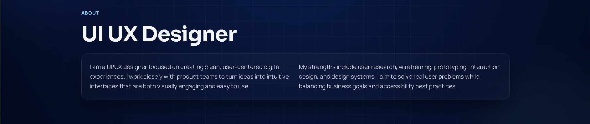
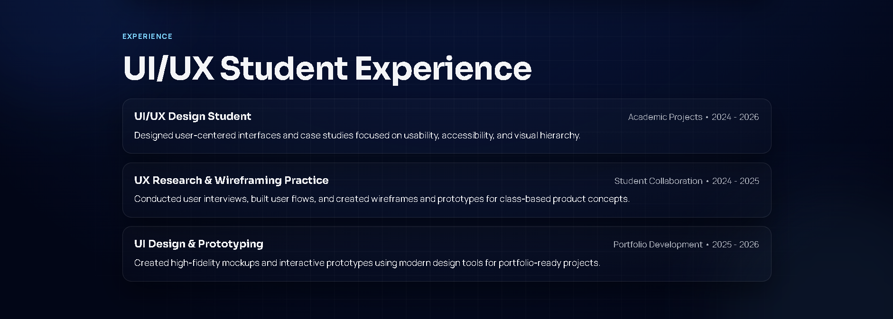
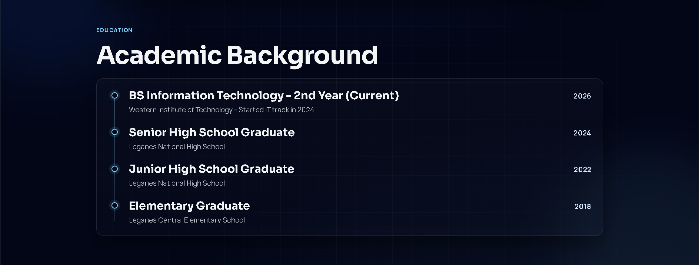
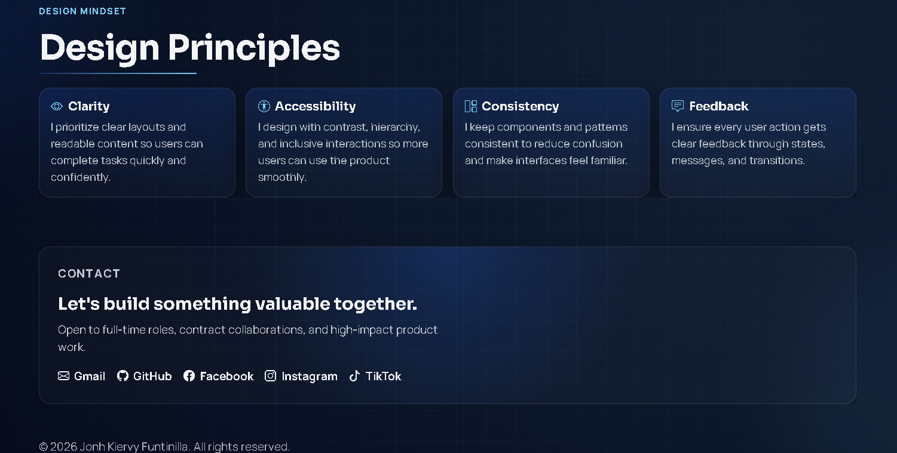

UI/UX Design Student
Academic Projects - 2024 - 2026
Designed user-centered interfaces and case studies focused on usability, accessibility, and visual hierarchy.
UI/UX Designer | Student | Focused on User-Centered Digital Products
2nd Year BSIT - UI/UX Student - 2026
I help teams transform ideas into seamless, engaging products through research, wireframes, prototypes, and clean visual design. I focus on usability, accessibility, and meaningful user outcomes.

Daily Workflow
Core tools I use to research, design, and build polished user experiences.
About
I design clear, user-centered interfaces that balance usability and visual quality.
I am a UI/UX designer focused on creating clean, user-centered digital experiences. I work closely with product teams to turn ideas into intuitive interfaces that are both visually engaging and easy to use.
My strengths include user research, wireframing, prototyping, interaction design, and design systems. I aim to solve real user problems while balancing business goals and accessibility best practices.
Experience
Hands-on academic and collaborative work focused on solving real user problems.
Academic Projects - 2024 - 2026
Designed user-centered interfaces and case studies focused on usability, accessibility, and visual hierarchy.
Student Collaboration - 2024 - 2025
Conducted user interviews, built user flows, and created wireframes and prototypes for class-based product concepts.
Portfolio Development - 2025 - 2026
Created high-fidelity mockups and interactive prototypes using modern design tools for portfolio-ready projects.
Education
My academic path in Information Technology and UI/UX design foundations.
Western Institute of Technology - Started IT track in 2024
Leganes National High School
Leganes National High School
Leganes Central Elementary School
Projects
A curated set of projects showcasing my process, design decisions, and outcomes.

A clean and intuitive task management app inspired by Notion, where users can add, organize, edit, and track daily tasks efficiently.
KonektBarangay is our modern e-services platform where residents can book appointments, request barangay documents, and track service updates online with speed and convenience.





A personal portfolio website that showcases my UI/UX journey, featured projects, education, and contact information with a modern, responsive design.
UI/UX Capabilities
Methods and tools I use to move from user insights to refined interfaces.
Design Mindset
The principles that guide every decision across research, interface, and interaction.
I prioritize clear layouts and readable content so users can complete tasks quickly and confidently.
I design with contrast, hierarchy, and inclusive interactions so more users can use the product smoothly.
I keep components and patterns consistent to reduce confusion and make interfaces feel familiar.
I ensure every user action gets clear feedback through states, messages, and transitions.